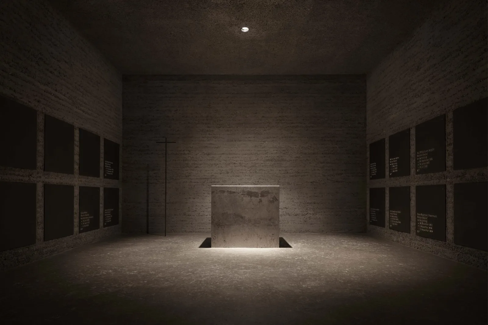
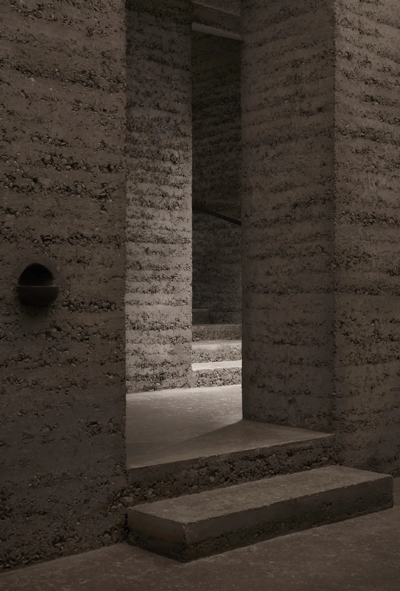
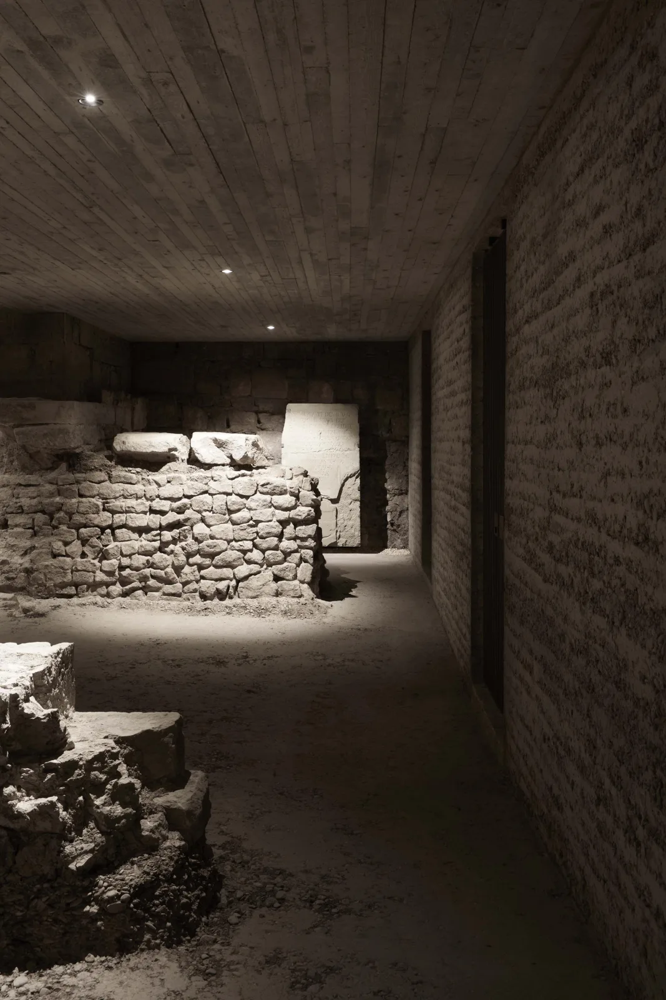
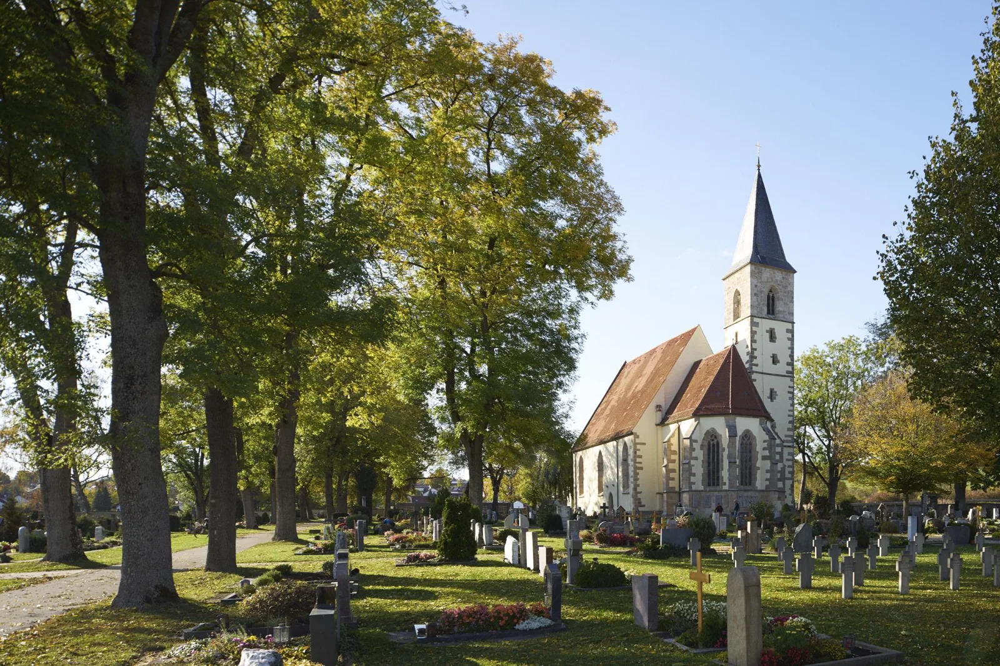
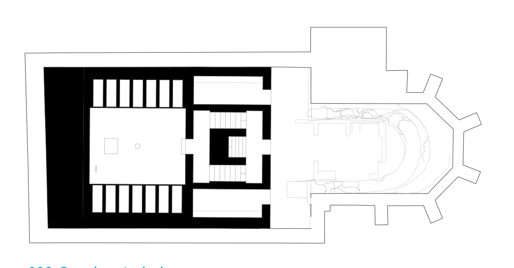

Burial vault and archaeological display · 2017
Sülchen Church Burial Vault
Cukrowicz Nachbaur Architekten; rammed earth by Martin Rauch / Lehm Ton Erde
Rottenburg am Neckar, Germany
Visitors descend towards a chamber for prayer and remembrance beside the bishops' burial places. An intermediate landing gives access to archaeological remains and small displays of excavated objects.
Soil excavated from the historic cemetery was returned to the site as layered rammed-earth walls. The material links the burial space to the ground it occupies, while a carefully staged descent prepares visitors for the high central chamber of devotion.


Relevant connections
Images and drawings / 05







